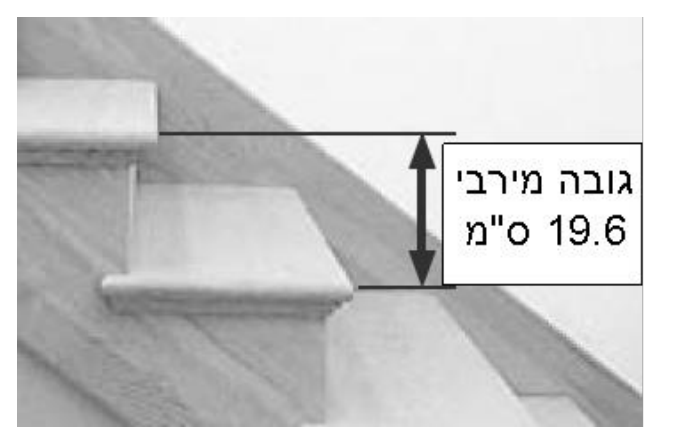

אלגברה לכיתה ח'
26
זשיפוע של ישראלגברה · כיתה ח' · שיפוע מטבלה, מגרף וממשוואה
1
הנתונים לקוחים מספר הוראות לבנייה תקנית של גרמי מדרגות.

- א.האם מדרגה שרוחבה 26 ס"מ וגובהה 18 ס"מ היא תקנית?כןלא
- ב.האם מדרגה שרוחבה 23 ס"מ וגובהה 19 ס"מ היא תקנית?כןלא
- ג.מה השיפוע של גרם מדרגות שנבנה לפי גובה מרבי ורוחב מינימלי?השיפוע =
- ד.תנו דוגמה לגובה ורוחב של מדרגה תקנית עם שיפוע 0.5.
- ה.תנו דוגמה למדרגה שאינה תקנית עם שיפוע 0.5.